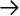

| I l@ve RuBoard |
The Windows NT Performance Monitor is a tool and API that allows applications to provide performance data in a consistent way. Administrators can use the Performance Monitor tool to view this data graphically, or programs can themselves use this data for more advanced purposes, such as taking daily samples of performance data and logging to a database.
Using the Performance Monitor has a number of benefits for both the administrator and programmer. The administrator can use a single, consistent interface for monitoring performance, regardless of the application in question; indeed, the administrator can simultaneously view performance information from two unrelated applications to assist in diagnosing performance bottlenecks. For you, the programmer, the biggest advantage is that you can provide detailed performance information for your application, but don't need to deliver any tools for viewing or analyzing this data; Windows NT and third-party tools provide all the functionality anyone could need!
In the next section we discuss the concepts behind the Performance Monitor, and how you can read Performance Monitor data using Python. Later in this chapter we will present how Python can provide Performance Monitor data for our sample Windows NT Service.
To use the Performance Monitor, an application must register one or more Performance Monitor objects. An object is a logical grouping of Performance Monitor data; it is quite common for an application to have a single object, grouping all performance-related data from the application in this single object.
For each object, the application must register one or more counters . A counter provides a single piece of performance data. Attributes about a counter include the units and the default scale for the final value. The units indicate how the counter values are to be transformed (for example, turned into a rate per second), while the scale defines a multiplication factor applied before the value is displayed or graphed.
For example, let's assume the application needs to keep a counter for connections per second made to it. The application is fast, so expect a hit rate in the thousands of connections per second. You would define your counter as having units of "per second" and a scale of "divide by 100." All the application needs to do is increment the counter once for each connection established, and the Performance Monitor itself will handle the transformation of the raw counter data to a value in the range 1 to 100 that represents the connections per second. The Performance Monitor has kept track of how many counter increments were made in the last second and applied the appropriate conversions.
As you can see, from the application's point of view it's quite simple and unobtrusive; once the counters are defined, simply increment a counter whenever you do something interesting. The Performance Monitor manages the translation to useful units. For the program that wishes to view Performance Monitor information, it's also simple: the Performance Monitor itself has already translated the raw values into user-friendly values ready to display. Unfortunately, as we shall see later, the installation and definition of these counters isn't particularly easy, but once that is mastered, the actual usage of the counters in your application is simple.
In addition to objects and counters, the final Performance Monitor concept we mention is that of an instance . A counter can optionally have any number of instances associated with it. An instance is used where a single counter applies to multiple things. The most basic example is the Performance Monitor data for the CPU in your computer. Windows NT defines the object and a few counters for data related to a CPU. However, as there may be multiple CPUs installed in a PC, each counter can have an instance, one for each CPU. Thus, when you need to collect performance data for a specific CPU, you need to know the instance you are interested in, or you can ask to collect data for all instances. Most counters provided by applications don't have instances associated with them. In our previous example where we kept total client connections, no instance would be associated with the counter. In all the Performance Monitor examples that follow, we don't use counters with instances, but the concept is mentioned for completeness.
To see these concepts, the simplest thing is to start the Windows NT Performance Monitor (from the Administrative Tools group under the Windows NT Start menu), and select Edit  Add to chart. In the dialog that's presented, you can clearly see the list of objects, counters, and instances. As you select different objects, the available counters will change. Depending on the counter you select, instances may or may not be available. Python can also display this list, so we will move on to Python and the Performance Monitor.
Python exposes the ability to read Performance Monitor information from the win32pdh and win32pdhutil modules. These modules use a Microsoft API to access the Performance Monitor known as the Performance Data Helper, or PDH, hence the name of the Python modules.
To get a feel for these Python modules, let's start with a demonstration of displaying a dialog for the user to browse and select the counters on this or any machine.
The win32pdhutil module provides a function browse() that displays such a dialog. As the user selects the Add button in the dialog, a function you provide is called with the selected counter. This callback function is supplied as a parameter to win32pdhutil.browse() . The first step is to provide the callback function, which takes a single parameter—the name of the counter. Our example simply prints this name.
Thus, the callback function can be defined as follows:
>>> def CounterCallback( counter ): ... print "Counter is", counter ... >>>
You can display the dialog by importing the win32pdhutil module and calling the browse() function passing the callback:
>>> import win32pdhutil >>> win32pdhutil.browse(CounterCallback)
A dialog is presented that allows you to select all the counters available on the system and even other systems! Select the Add button and your function is called, printing the selected counter. Figure 18.1 shows the code running under Python-Win, just after selecting the Add button.
The counter definition is a simple string, with the machine, object, counter, and instance portions all embedded in the string. The win32pdh module contains functions for parsing a string of this format into the constituent parts and for building such a string from the parts; see the win32pdhutil module source code for more details.
Once you've determined the counters you want, obtaining the information is quite simple: use the win32pdhutil.GetPerformanceAttributes() function. In the simple case of a counter on the local machine without instances, you need pass only the object name and the counter name. For example, an object called Memory provides a number of counters, including one called Available Bytes. To obtain the value, use the code:
>>> win32pdhutil.GetPerformanceAttributes("Memory", "Available Bytes")
18358272
>>>
This demonstrates an interesting use of the Performance Monitor. There is some information about the system that's not easily available from the Windows API, but is available from the Performance Monitor. Statistics about processes (including its process ID) or about the memory in the system can often be obtained in far more detail by using the Performance Monitor than by using the API.
| I l@ve RuBoard |